붙여넣는 순간.
라이브러리의 시작.
한 개의 링크부터 여러 개의 다시보기까지.
‘다중 다운로드’에 한 줄씩 넣고,
입력한 순서대로 목록에 추가하세요.
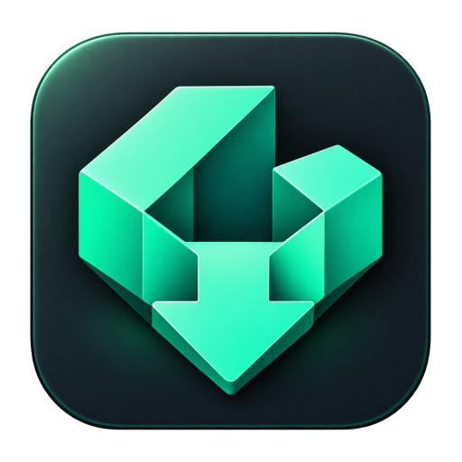
ChzzkDownloaderCHZZK & ANY VIDEO URL DOWNLOADER
긴 다시보기도, 짧은 클립도.
링크를 붙여넣으면 나만의 영상 라이브러리가 시작됩니다.
Windows 데스크톱 · 1.0.8 · 폴더형 포터블 앱
ChzzkDownloader_v108.zip · 2026-11-03 · 메인 창을 넓히고 새 영상 확인 간격을 1~24시간으로 정할 수 있게 했으며, 라이브 녹화용 글로벌 CDN(베타) 선택과 취소 오조작 방지를 추가했습니다. 1.0.8 새 소식 ↗
THREE STEPS. YOUR LIBRARY.
ChzzkDownloader_v108.zip을 풀고 폴더 구조를 유지한 채 ChzzkDownloader.exe를 실행합니다. lib·bin 폴더는 EXE와 함께 두세요.
사이드바 맨 아래 ‘설정’에서 저장 위치·화질·인코딩·파일 이름·채널별 폴더·속도 제한을 정합니다. 저장 위치는 다음 실행에도 유지됩니다. 필요하면 같은 화면에서 치지직 계정도 연결하세요.
영상 주소를 붙여넣고 ‘다운로드’를 누르세요. 여러 영상은 ‘다중 다운로드’ 창에 한 줄씩 넣습니다. 필요하면 ‘받을 내용’에서 영상·채팅만·영상 + 채팅을 고르거나 ‘구간만 받기’로 시작·끝을 정하세요.
BUILT FOR YOUR MOMENTS.
SCROLL TO EXPLORESMALL DETAILS. BETTER DOWNLOADS.
치지직 VOD·클립은 물론 YouTube·인스타그램·TVer 등 어떤 사이트의 영상 주소든 붙여넣으세요. ‘다중 다운로드’ 창에 주소를 한 줄씩 넣어 한 번에 추가하거나, 브라우저에서 끌어놓을 수 있습니다.
ANY VIDEO URL최고 화질 또는 원하는 해상도 상한을 선택하세요. MP4로 저장합니다. 원본 유지 또는 CPU/NVIDIA NVENC 인코딩, H.264(AVC)/H.265(HEVC)를 선택하세요.
MP4 · AVC / HEVC최대 4개 영상·영상당 최대 16개 조각을 동시에 받으며, 영상 한 개당 속도 상한을 1~50 MB/s로 정할 수 있습니다. 여러 영상의 합계는 동시 영상 수만큼 늘어날 수 있고, 라이브·구간 다운로드에는 제한이 적용되지 않을 수 있습니다.
PARALLEL · RATE LIMIT이번 실행의 완료 영상은 다운로드 목록에서 재생하거나 더블클릭하세요. ‘완료 항목 정리’로 숨겨도 영상과 기록은 남습니다. 이전 실행의 작업·실패·취소 항목은 다운로드 기록에서 확인합니다.
DOWNLOAD HISTORY취소·실패한 영상은 받은 부분을 보관하고 재시도·같은 주소 추가·재실행 후 대기열 재개 시 이어받습니다. 일시적인 연결 오류는 두 번까지 자동 재시도합니다. 복원된 대기열은 ‘대기열 계속’을 누를 때 시작하며, 라이브·구간 다운로드는 이어받지 않습니다.
RESUME · AUTO RETRY제목에 게시 날짜·채널을 넣는 네 가지 파일 이름 규칙과 채널별 폴더를 선택하세요. 날짜는 PC 현지 날짜 기준이며, 같은 이름에는 번호를 붙입니다. 새로 대기열에 넣는 작업부터 적용됩니다.
FILE NAMES · CHANNEL FOLDERS창을 숨겨도 다운로드는 계속됩니다. 트레이 메뉴에서 대기열을 멈추거나 재개하고, 완료 알림으로 다시 돌아오세요.
SYSTEM TRAY새 버전의 추가·변경·수정 내역을 먼저 보여 줍니다. ‘지금 업데이트’를 선택하면 다운로드가 끝난 뒤 같은 프로그램의 독립 업데이트 모드가 배포 파일을 검증하고 프로그램을 교체합니다.
INDEPENDENT UPDATER원본 유지가 기본입니다. 변환이 필요할 때 CPU/NVENC와 AVC/HEVC를 선택하세요. 변환 실패·취소 시 다운로드한 원본은 보존합니다.
AVC / HEVC전체 영상·다시보기·업로드·클립을 골라 최신순·인기순으로 정렬하세요. ‘받음’·‘채팅 받음’·‘영상·채팅 받음’을 구분하고, ‘받지 않은 영상만 선택’으로 아직 안 받은 영상을 고를 수 있습니다.
CHANNEL VIEWS · SAVED BADGES첫 실행에 FFmpeg·ffprobe와 yt-dlp nightly를 받고, 시작할 때마다 확인해 없거나 손상되었으면 자동으로 다시 준비합니다. 작업이 끝난 뒤 설정의 ‘도구 업데이트’를 누르면 바뀌었거나 손상된 도구만 검증해 교체합니다. 이미 최신인 도구는 다시 받지 않습니다.
FFMPEG · YT-DLP NIGHTLY공유 주소·모바일 주소처럼 형태가 달라도 같은 영상이면 다시 받을지 확인합니다. 기록 화면의 최근 500개 밖에 있는 영상도 기억하며, 대기·진행 중인 영상은 중복 추가하지 않습니다.
VIDEO IDENTITY CHECK‘완료 항목 정리’ 오른쪽의 로그 버튼으로 열고 닫습니다. 카드 선택이나 작업 필터로 원하는 로그만 확인하며, 스크롤바 때문에 버튼과 카드가 좌우로 밀리지 않습니다.
JOB LOG FILTER평소 브라우저에서 내보낸 cookies.txt를 가져오면 아이디·비밀번호 입력 없이 계정을 연결합니다. 로그인 쿠키 두 개만 내 PC에 암호화 저장하고 다시 실행해도 유지합니다. 본인·성인 인증된 계정이라면 그 계정의 시청 권한으로 19세 영상도 받을 수 있습니다.
COOKIES.TXT LOGIN다른 계정의 쿠키를 가져오면 프로필로 추가합니다. 설정 위의 프로필 사진·이름에서 계정을 전환하고, 팔로잉 채널은 즐겨찾기에 자동으로 추가합니다. 즐겨찾기와 순서는 계정마다 따로 유지합니다.
MULTI PROFILES치지직 다시보기의 채팅을 오프라인 HTML 한 파일로 저장하세요. 닉네임을 누르면 그 사용자의 채팅만 보고, 검색·사용자별 요약에서 구독·후원·가림 상태를 확인할 수 있습니다. 닉네임을 바꿔도 같은 사용자 ID로 모입니다.
VOD CHAT · OFFLINE HTML주소를 넣기 전에 ‘구간만 받기’를 켜고 시작·끝을 입력하세요. 끝을 비우면 영상 끝까지 받습니다. 재인코딩 없이 잘라 몇 초 차이가 날 수 있으며, 채널 화면의 일괄 선택에는 적용되지 않습니다.
START · END라이브 방송 주소를 넣어 녹화하세요. 경과 시간·녹화 크기·남은 공간으로 녹화 가능한 시간을 표시하고, 중지·연결 끊김·남은 공간 1GB 미만일 때 지금까지의 녹화를 저장합니다. 일부 구간이 빠지면 설정에서 글로벌 CDN(베타)으로 바꿔 녹화할 수 있습니다.
LIVE RECORDING설정에서 새 영상 확인을 켜면 정한 간격(1~24시간, 기본 1시간)마다 확인해 배지와 트레이로 알립니다. ‘새 영상 자동 다운로드’를 켠 채널은 이미 받은 영상을 건너뛰고 새 영상만 대기열에 넣습니다. 처음 확인한 기존 영상은 알리지 않습니다.
NOTIFY · AUTO DOWNLOAD영상 크기를 알 수 있으면 동시에 받는 영상이 쓸 공간까지 계산해 부족할 때 전송 전에 알려 줍니다. 실패하면 원인과 다음 조치를 한국어로 안내하고, 카드의 상태 문구에 마우스를 올리면 전체 원문도 확인할 수 있습니다.
SPACE CHECK · ERROR GUIDANCE설정에서 썸네일 캐시 사용량을 확인하고 비울 수 있습니다. 프로그램을 시작하면 기록에 더 이상 없는 영상의 캐시는 자동으로 정리하며, 저장한 영상과 다운로드 기록은 유지합니다.
THUMBNAIL CACHEA CALMER WAY TO DOWNLOAD
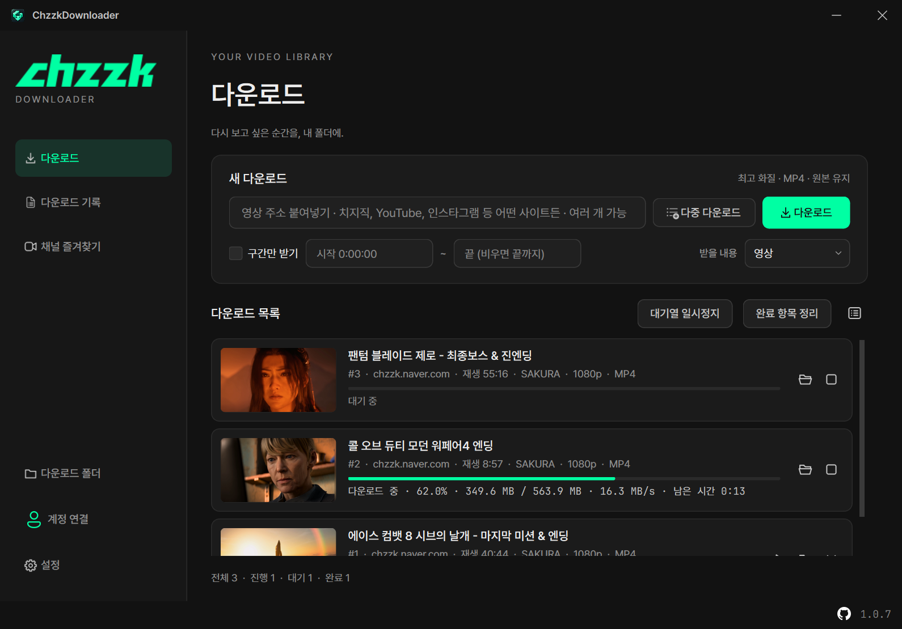
실제 1.0.8 배포 EXE 화면 · 영상 정보는 현재 공개 목록에서 가져왔고, 다운로드·저장 상태는 소개용 예시입니다. 메인 창 오른쪽 아래의 흰색 GitHub 아이콘만 저장소 링크이며, 버전 숫자는 일반 표시입니다.
VIDEO. CHAT. JUST THE PART YOU NEED.
다운로드 화면의 ‘받을 내용’에서 영상·채팅만·영상 + 채팅을 선택하세요. 치지직 다시보기 채팅은 오프라인 HTML 한 파일로 저장되며 닉네임을 누르면 그 사용자의 채팅만 볼 수 있습니다. 닉네임 옆 ↗는 채널을 열고, 검색창에는 채널 주소나 ID도 넣을 수 있습니다.
‘구간만 받기’를 켜고 시작·끝을 입력하면 주소 입력·다중 다운로드에 적용됩니다. 한 번 추가하면 체크가 풀리고, 끝을 비우면 영상 끝까지 받습니다. 영상 + 채팅에서는 영상만 잘라 받고 채팅은 전체를 저장합니다.
실제 1.0.8 화면 · 작업과 진행 상태는 소개용 예시입니다. 채팅은 치지직 다시보기만 지원하며 라이브·클립·다른 사이트의 채팅은 받을 수 없습니다. 구간은 재인코딩 없이 잘라 몇 초 차이가 날 수 있습니다.
RECORD NOW. KEEP IT LATER.
방송 주소를 넣으면 그 시점부터 녹화합니다. 동시 다운로드 수에 포함되지 않아 다른 영상을 함께 받을 수 있고, 카드에 경과 시간·녹화 크기와 남은 공간으로 더 녹화할 수 있는 시간을 표시합니다. 중지하거나 연결이 끊기면 지금까지 녹화한 부분을 MP4로 저장합니다.
실제 1.0.8 화면 · 녹화 상태·용량·남은 시간은 소개용 예시입니다. 1080p60 기준 시간당 약 3.8GB, 10시간 약 38GB가 필요하며 화질에 따라 달라집니다. MP4 정리에는 녹화 크기만큼 여유 공간이 더 필요합니다. 남은 공간이 1GB 아래로 줄면 멈추고 저장하며, 정리할 공간이 없거나 MP4 변환에 실패하면 TS로 보존합니다. 재실행 복원·이어받기는 하지 않습니다.
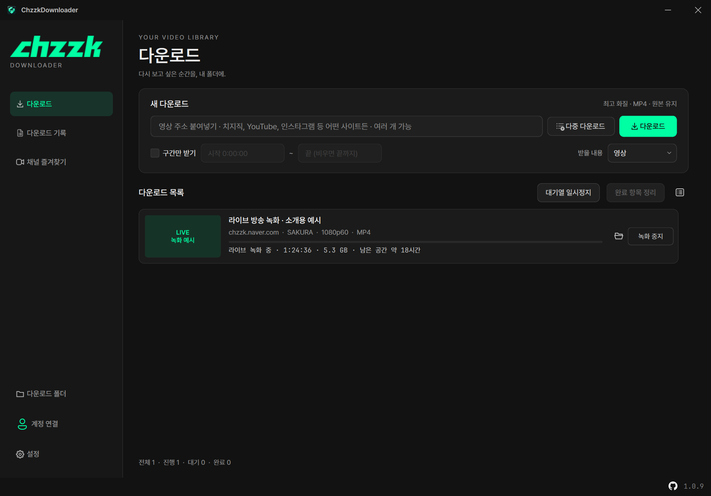
NEW VIDEOS. LESS CHECKING.
‘설정 → 프로그램 동작 → 즐겨찾기 채널의 새 영상 확인’을 켜고 간격을 1~24시간으로 입력하면 새 영상 개수와 트레이 알림을 받을 수 있습니다. 자동으로 받을 채널은 채널 화면의 ‘새 영상 자동 다운로드’도 켜세요. 이미 받은 영상은 건너뛰고 새 영상만 대기열에 추가합니다.
같은 설정 카드에서 썸네일 캐시 사용량을 확인하거나 ‘캐시 비우기’를 누를 수 있습니다. 기록과 영상 파일은 유지되며, 시작할 때 기록에 더 이상 없는 영상의 캐시도 자동 정리합니다.
새 영상 확인은 기본 꺼짐입니다. 처음 확인한 기존 영상은 알리거나 자동으로 받지 않습니다. 설정을 켜면 시작 1분 뒤부터 확인하고 이후 입력한 간격(기본 1시간)마다 확인합니다.
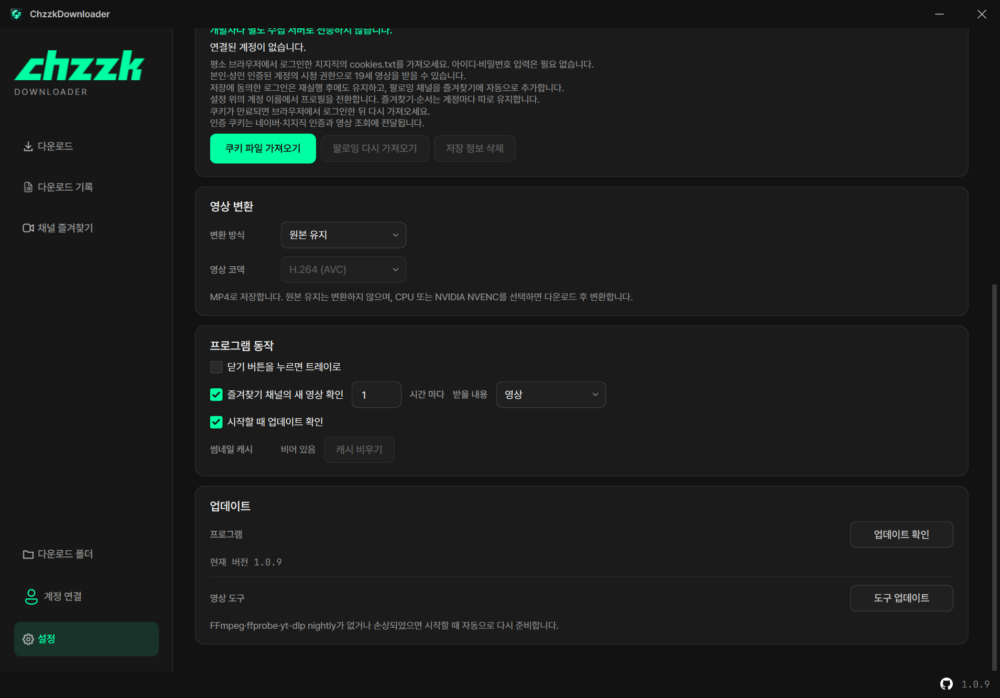
MORE LINKS. ONE LIST.
다운로드 화면의 ‘다중 다운로드’를 누르고 주소를 한 줄에 하나씩 넣으세요. 주소 개수를 확인한 뒤 ‘다운로드 (개수)’를 누르면 입력한 순서대로 목록에 추가됩니다.
입력 안의 중복 주소와 주소가 아닌 줄은 건너뜁니다. 이미 받은 영상은 주소 형태가 달라도 다시 다운로드할지 먼저 확인합니다. TVer는 일본 VPN에 연결한 뒤 받아야 하며 다운로드가 끝날 때까지 연결을 유지하세요.
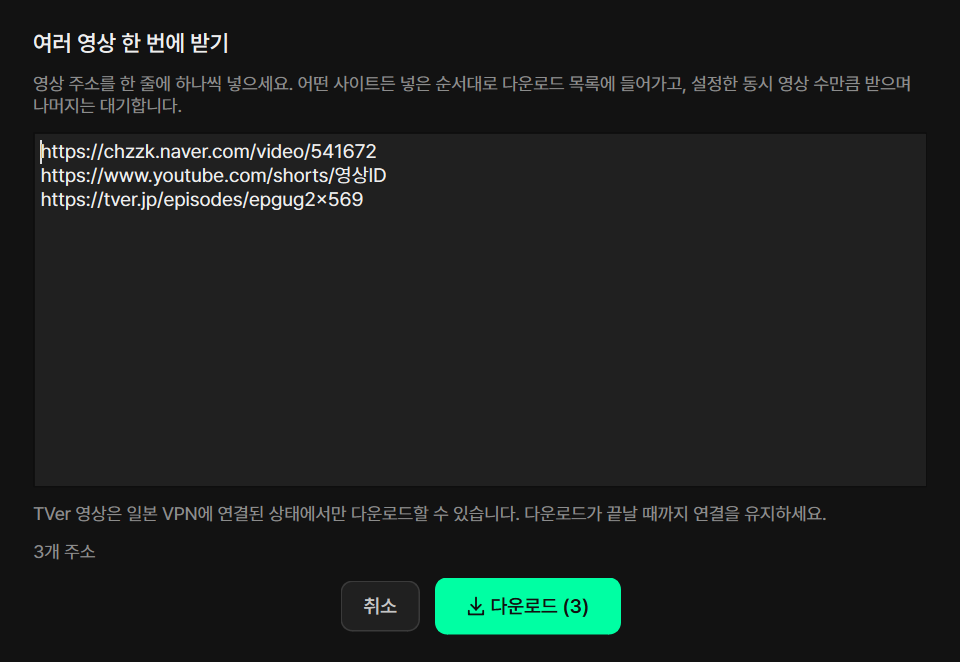
SET IT ONCE.
사이드바 맨 아래의 ‘설정’에서 저장·다운로드, 치지직 계정, 영상 변환, 프로그램 동작, 업데이트 카드에서 필요한 항목을 정하세요. 저장 위치를 바꾸면 다음 실행에도 유지됩니다. 첫 실행에 FFmpeg·ffprobe와 yt-dlp nightly를 받고 시작할 때마다 확인해 없거나 손상된 도구를 자동 준비하며, ‘도구 업데이트’는 최신 도구를 다시 받지 않고 필요한 도구만 교체합니다. 창 크기는 해상도와 Windows 배율에 맞춰 자동으로 정해지고, 작은 화면에서는 설정 내용을 스크롤로 볼 수 있습니다.
파일 이름에 게시 날짜·채널을 넣거나 채널별 폴더에 저장하고, 영상 한 개당 속도 상한을 정할 수 있습니다. 라이브 녹화에서 일부 구간이 빠지면 ‘치지직 CDN’을 글로벌 CDN(Akamai, 베타)으로 바꿔 보세요. 아래쪽 ‘프로그램 동작’에는 새 영상 확인 간격과 썸네일 캐시 비우기가 있습니다.
기존 yt-dlp 지원 사이트도 함께 사용할 수 있습니다. 사이트의 변경이나 계정 접근 조건에 따라 다운로드 가능 여부가 달라질 수 있습니다.
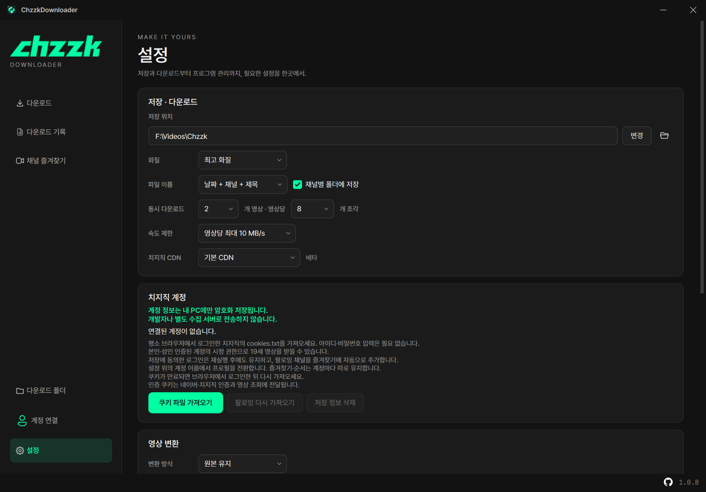
YOUR CHANNELS. YOUR PICKS.
‘채널 즐겨찾기’에서 채널명이나 주소로 찾아 ‘추가’를 누르세요. 저장한 카드를 누르면 그 채널의 VOD가 썸네일·제목·날짜와 함께 펼쳐지고, 원하는 영상만 골라 바로 받을 수 있습니다. 치지직 계정을 연결하면 팔로잉 채널이 자동으로 추가되며, 카드는 드래그로 순서를 바꿀 수 있습니다.
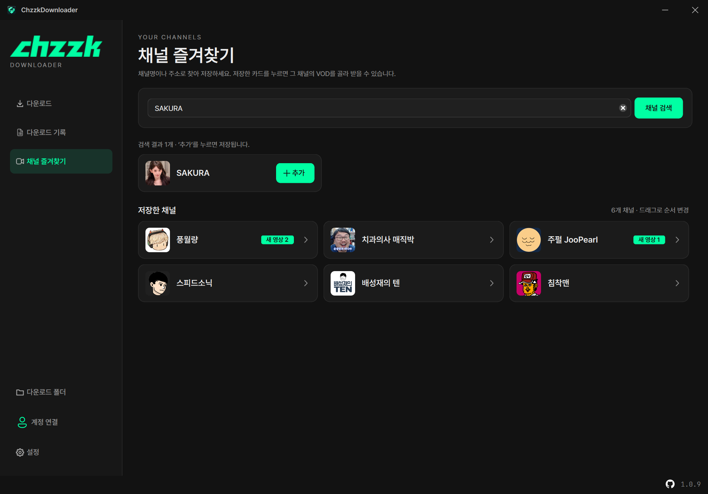
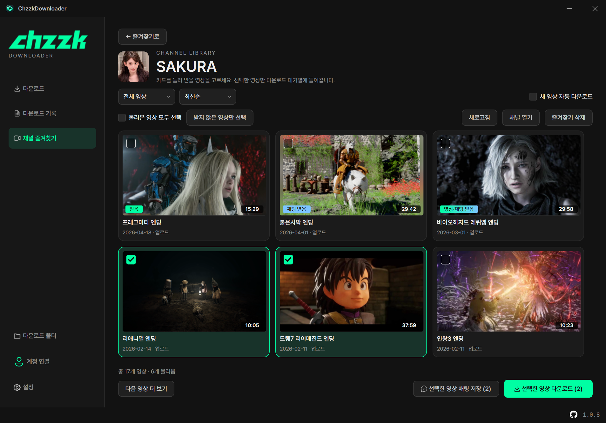
채널 화면에서 전체 영상·다시보기·업로드·클립과 최신순·인기순을 고를 수 있습니다. ‘받지 않은 영상만 선택’은 채팅만 저장한 영상도 선택하며, ‘선택한 영상 채팅 저장’은 클립을 제외한 다시보기에 사용합니다.
실제 1.0.8 앱 화면 · 채널·영상 정보는 현재 공개 목록의 일부이며, 새 영상 개수와 영상·채팅 저장 배지는 소개용 예시입니다.
YOUR ACCOUNT. YOUR LIST.
평소 브라우저에서 치지직에 로그인한 뒤 내보낸 cookies.txt를 ‘설정 → 치지직 계정 → 쿠키 파일 가져오기’에서 연결하세요. 아이디·비밀번호 입력 없이 로그인을 확인하고, 팔로잉 채널을 즐겨찾기에 자동으로 추가합니다. 여러 계정을 저장하면 설정 위의 프로필 사진·이름에서 전환할 수 있고, 즐겨찾기와 순서는 계정마다 따로 유지합니다.
실제 1.0.8 화면 · 계정 이름과 사진은 소개용 예시입니다. 19세 영상은 본인·성인 인증된 계정의 시청 권한이 있어야 받을 수 있습니다.
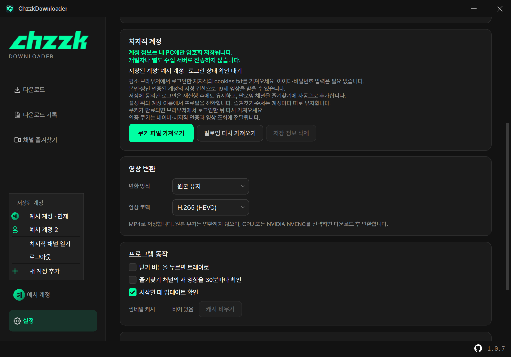
STAYS ON YOUR PC.
연결 창에서 저장에 동의한 뒤 chzzk.naver.com_cookies.txt를 선택하고 ‘가져오고 연결’을 누르세요. 파일에서 NID_AUT·NID_SES 두 쿠키만 골라 Windows 사용자 계정에 묶어 암호화 저장하며, 개발자나 별도 수집 서버로 전송하지 않습니다. 인증 쿠키는 네이버·치지직 인증과 영상 조회에 전달됩니다.
실제 1.0.8 화면 · 가져온 쿠키 파일은 암호화되지 않으며 프로그램이 수정·삭제하지 않으므로, 연결 후 필요 없으면 직접 삭제하세요. 쿠키가 만료되면 다시 가져와야 하며 영구 로그인을 보장하지 않습니다.
READY AT A GLANCE.
어느 탭에 있든 하단 상태바에서 도구 확인·다운로드·설치 상황을 확인할 수 있습니다. 다운로드 진행률은 민트색으로 표시하며, 완료 안내는 5초 뒤 서서히 사라집니다.
실제 1.0.8 화면 · 도구 다운로드 55%는 소개용 예시입니다.
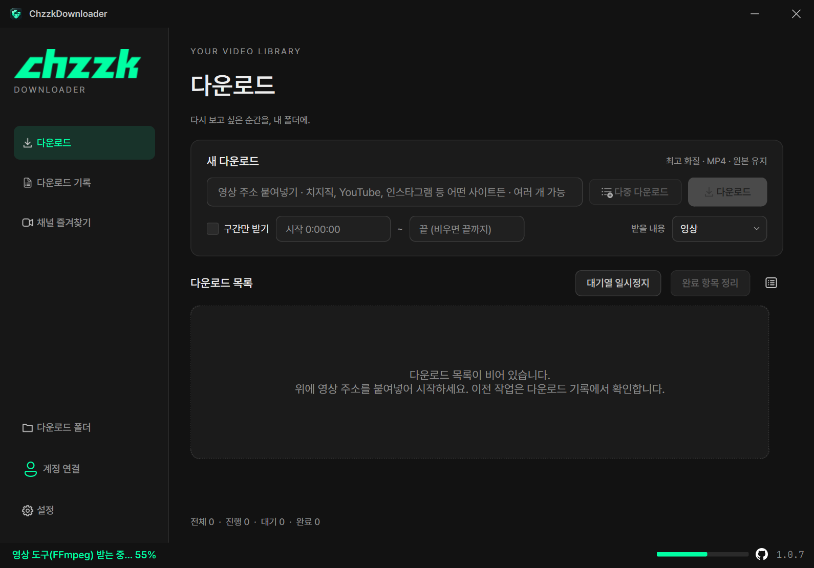
KNOW BEFORE YOU PICK.
연령 확인이 필요한 치지직 영상은 썸네일 오른쪽 위의 빨간색 19세 배지로 구분합니다. 본인·성인 인증된 치지직 계정을 연결하면 그 계정의 시청 권한으로 받을 수 있습니다. 공개 영상과 지역 제한만 있는 영상에는 이 배지를 표시하지 않습니다.
실제 1.0.8 화면 · 영상과 제한 상태는 소개용 예시입니다. 인증·시청 권한이 없는 계정으로는 받을 수 없습니다.
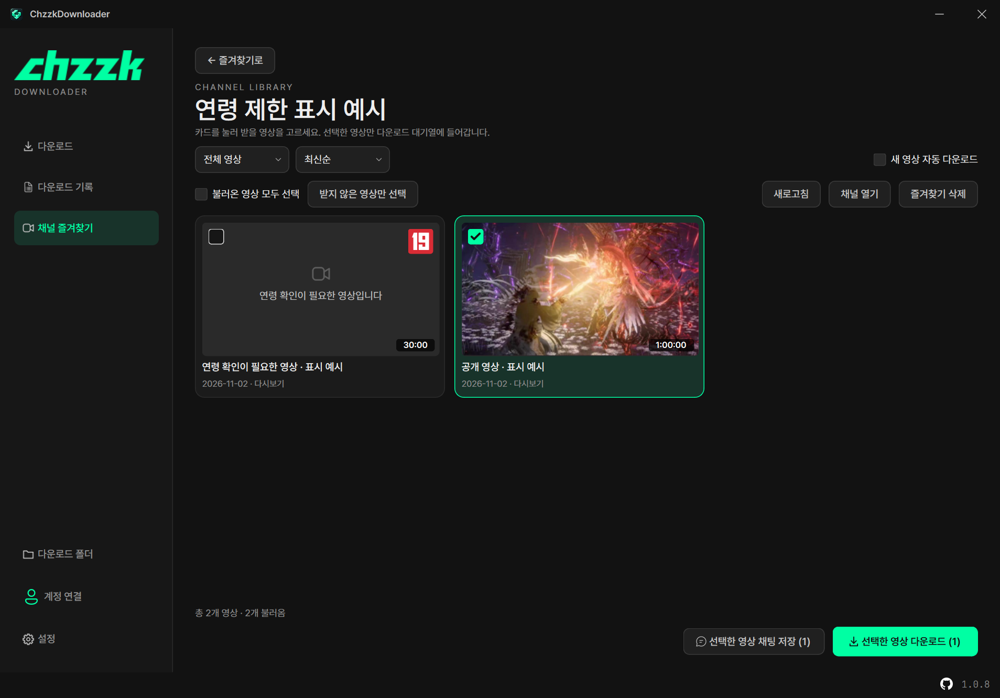
ALWAYS UP TO DATE.
시작할 때 GitHub의 정식 릴리스를 확인합니다. 처음 뜨는 안내창에서 추가·변경·수정 내역을 읽고 ‘지금 업데이트’ 또는 ‘나중에’를 선택하세요. 설치를 고르면 진행 중인 다운로드가 끝난 뒤 업데이트 창이 이어받아 새 버전을 준비합니다.
저장한 영상 · 다운로드 기록 · 설정 · 채널 즐겨찾기 · 저장한 계정은 바꾸지 않습니다. ‘설정 → 업데이트 확인’으로 직접 확인하면 최신 버전일 때도 안내창을 보여 줍니다.
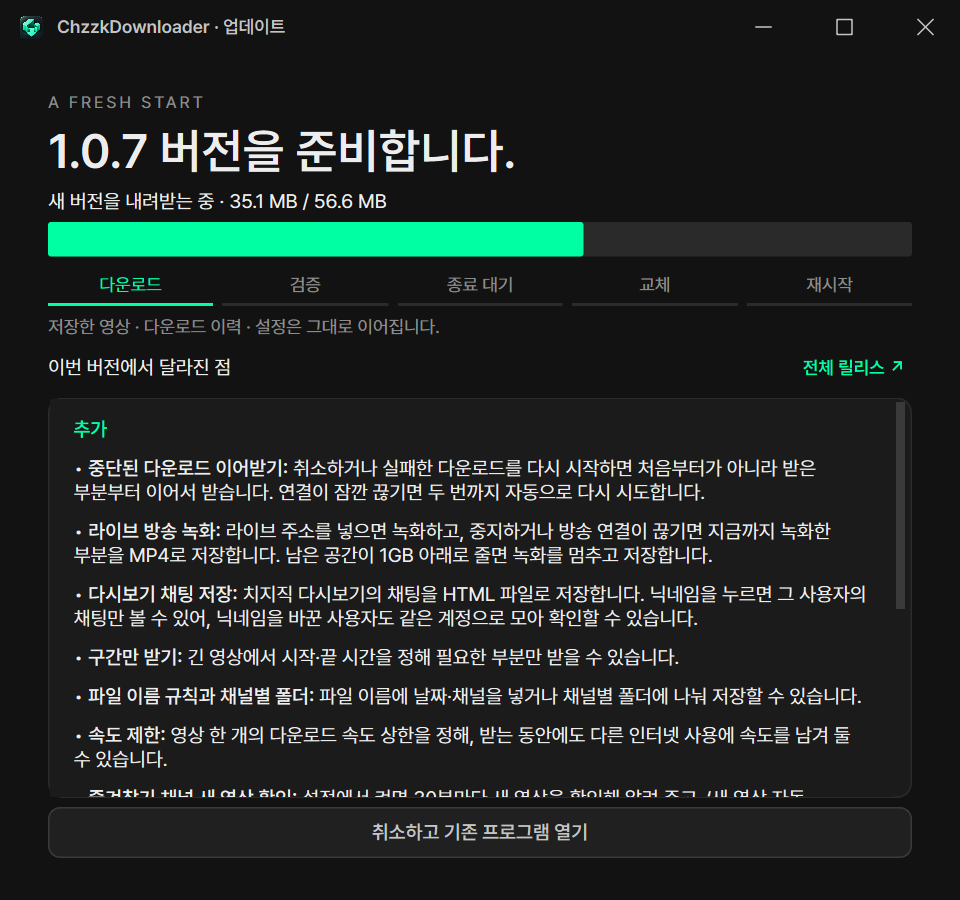
영상이 있는 페이지의 주소라면 사이트를 가리지 않고 분석해 받습니다. 치지직은 https://chzzk.naver.com/video/번호 VOD 주소나 https://chzzk.naver.com/clips/ID 클립 주소, 그 밖에 YouTube(쇼츠)·인스타그램 릴스 등의 개별 영상 주소를 입력하세요. 여러 주소는 ‘다중 다운로드’ 창에 한 줄씩 넣으세요. 채널에서 고르려면 ‘채널 즐겨찾기’에 저장한 뒤 VOD 카드를 선택하세요.
채널명 또는 https://chzzk.naver.com/채널ID 주소로 검색해 결과 카드의 ‘추가’를 누릅니다. 저장한 카드를 누르면 VOD가 썸네일·제목·날짜 카드로 표시되고, 카드를 눌러 선택한 영상만 다운로드합니다. 치지직 계정을 연결하면 팔로잉 채널이 자동으로 추가되고, 즐겨찾기는 계정마다 따로 보관합니다.
치지직 다시보기 주소를 넣고 ‘받을 내용 → 채팅만’을 선택하거나, 채널 화면에서 ‘선택한 영상 채팅 저장’을 누르세요. 저장한 HTML은 인터넷 연결 없이 열고 검색·사용자별 채팅·구독·후원·가림 상태를 볼 수 있습니다. 팔로우 여부는 제공되지 않습니다. 라이브·클립·다른 사이트의 채팅은 대상이 아니며, 제한된 다시보기는 연결한 계정의 시청 권한이 필요합니다.
TVer의 개별 에피소드 주소를 넣으세요. 일본 VPN에 연결해야 하며 다운로드가 끝날 때까지 유지해야 합니다.
대기 상태로 복원되며 자동으로 시작하지 않습니다. ‘대기열 계속’을 누르면 저장한 위치와 옵션으로 받은 부분부터 이어받습니다. 실패한 영상도 재시도로 이어받을 수 있으며 라이브·구간 작업은 대상이 아닙니다. 필요 없는 대기 항목은 다운로드 목록에서 우클릭해 ‘목록에서 삭제’를 누르면 다시 복원하지 않으며, 기록과 영상 파일은 유지합니다. 주소 형태가 달라도 이미 받은 영상이면 다시 받을지 확인합니다.
치지직 계정을 연결하면 받을 수 있습니다. 19세 영상은 본인·성인 인증된 네이버 계정이, 구독자 영상 등은 그 계정의 시청 권한이 필요합니다. 인증이나 시청 권한이 없는 영상은 받을 수 없습니다.
평소 브라우저에 Get cookies.txt LOCALLY를 설치하고 치지직에 로그인한 뒤 메인 화면 https://chzzk.naver.com/을 엽니다. 주소창 옆의 확장 프로그램 아이콘을 눌러 왼쪽 첫 번째 Export 버튼으로 chzzk.naver.com_cookies.txt를 저장하세요. 앱의 ‘설정 → 치지직 계정 → 쿠키 파일 가져오기’에서 저장에 동의하고 이 파일을 선택한 뒤 ‘가져오고 연결’을 누릅니다. 아이디·비밀번호 입력은 필요 없습니다.
EXE 옆 .auth 폴더에 현재 Windows 사용자 계정에 묶어 암호화 저장합니다. 개발자나 별도 수집 서버로 전송하지 않으며, 인증 쿠키는 네이버·치지직 인증과 영상 조회에 전달됩니다. 다른 PC·Windows 계정에서는 쓸 수 없고, 쿠키가 만료되거나 네이버가 로그인을 해제하면 다시 가져와야 합니다. 로그아웃하면 현재 계정의 쿠키만 삭제합니다.
다른 계정의 쿠키를 가져오면 프로필로 추가되고, 같은 계정은 쿠키를 갱신합니다. 설정 위의 프로필 사진·이름을 눌러 계정을 전환하고, ‘새 계정 추가’로 연결 창을 바로 열 수 있습니다. 즐겨찾기와 순서는 계정마다 따로 유지하며, 로그아웃해도 목록은 남습니다.
대기열 일시정지는 새로운 영상의 시작을 멈춥니다. 진행 중인 영상은 계속 다운로드하며, 해당 영상의 취소 버튼으로 중단할 수 있습니다.
다운로드 기록에서 해당 항목과 미리보기 캐시, 그 작업이 보관한 미완성 다운로드 조각을 제거합니다. 저장 폴더의 완성된 영상 파일은 유지됩니다.
READY WHEN YOU ARE.